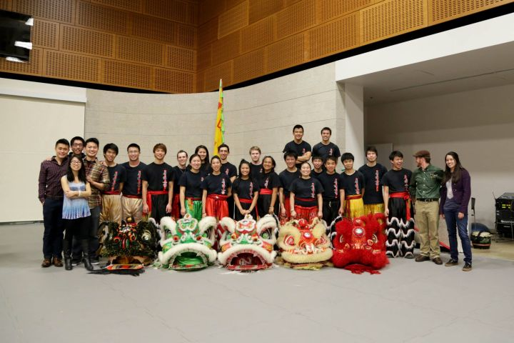
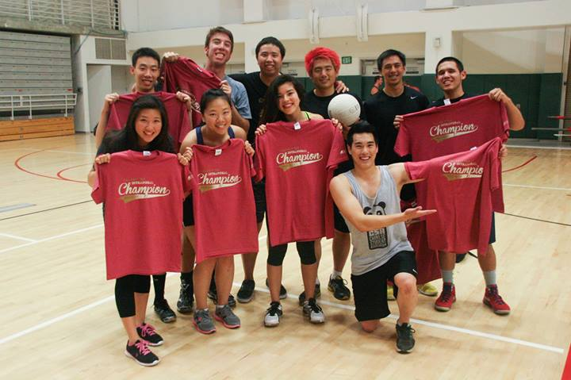

Take Out Kidz (TOK) was founded in 2009 by Kevin Sutardji during the Spring Quarter of 2009. TOK is a non-audition dance group that is dedicated to teaching anyone who is interested in learning how to dance, no matter if you have experience or not. Although this is a non-audition, we strive to become better dancers every day. The team began with 5 members, and quickly expanded to over 25. With a focus on teamwork and improvement, TOK have been a breeding ground for freshmen to grow their dancing skills and be a part of not only a team, but a family.
During the Winter Quarter of 2010, PCE Modern Coordinator Marvin Macairan and TOK Choreographer Gregg Hanano, decided that they wanted to change the relationship between two rival clubs. With the use of dance and the help of other choreographers, the very first PCE and CSA (PCeSA for short) dance collaboration was created. In 3 short weeks, dancers learned, blocked, and performed this set for both clubs to see, hoping to change the way future generations would see the relationship between the clubs. The tradition has been carried on since.
Anyone and everyone who is interested in joining TOK is welcome, come join us on Wednesdays from 8-10PM in the PCV parking structure and Sundays from 5-7PM in Studio 2 located in the Recreational Center.
Past Coordinators:
Kevin Sutardji, 2009-2010
Ryan Gee, 2010-2011
Brandon Takahashi, 2011-2012
Ryan Sutardji, 2012-2013
Sterling Tarng, 2013-2014
Trang Tran, 2014-2015
Kevin Chiu, 2015-2016
Lion Dance originated back in ancient China and became a symbol of good luck by scaring away evil spirits during the New Year on the Lunar Calendar. The lion head is often mistaken as a dragon because there were no lions in China so they did not know what they looked like. Instead, they combined attributes from several different animals to create their traditional lion. The ears were taken from the Chinese unicorn, the beard came from the dragon, the back of the head represents a turtle’s shell, and the horn is supposed to represent a phoenix. Other symbolism is found on the lion’s head. A big forehead meant great knowledge and wisdom, and the mirror placed on the lion’s forehead is to scare away the evil spirits; since evil spirits are afraid to see their own reflections.
Young Louis founded Lion Dance Team (LDT) in 1957. From then on, the team began to educate students and the community about this traditional dance. Lion Dance Team’s performances for blessing businesses during New Years and grand openings help maintain the cultural ties that the Chinese community in San Luis Obispo would otherwise have to give up.

Anyone and everyone who is interested in joining lion dance is welcome, come join us on Saturday at 10AM behind the H.P. Davidson Music Building! No prior experience is needed and just come and have a great time!
|
Past Captains: |
Erik Lee, 2004 Wenschel Lan, 2005 Erik Lee, 2006 Thomas Marley, 2007 Alan Swe, 2008 Danny Lee, 2009 Devin Tang, 2010 Corrinne Goodwin, 2011 Adam Yee, 2012 Todd Wong, 2013 Ben Wong, 2014 Penelope Thoo & Scott Wong, 2015 |
Every weekend CSA holds a different sporting event. Whether it’s kickball, dodge ball, tossing a frisbee, you name it! The sporting events are open to anyone looking for another way to have some fun, while connecting with other members of CSA. Regardless of your experience, CSA’s sporting events are for enjoyment and having a good time. The location of the events will vary from week to week from the track field, the sports complex, or in the Rec Center.
CSA also has two coed intramural teams in basketball and volleyball that compete once a week on the backcourts in the Rec Center. Come play with us if you are looking for a more competetive aspect to sports. Or come support our teams. We love seeing our members cheer for their favorite club.

Past Coordinators:
Felix Chung, 2009-2010
Carlo Dacanay, 2010-2011
Johnny Chuc, 2011-2012
Jeffrey Tang, 2012-2013
Sergio Villalpando, 2013-2014
Kyle Chan, 2014-2015
Patrick Cheung, 2015-2016